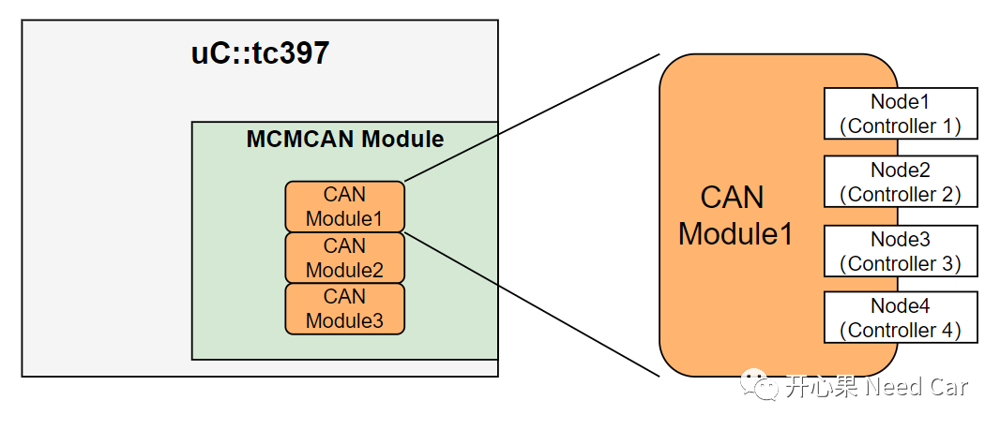
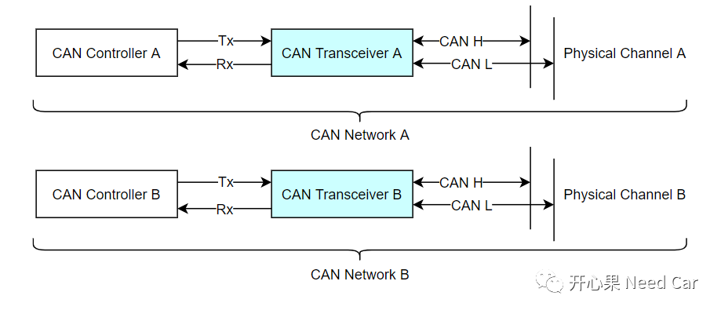
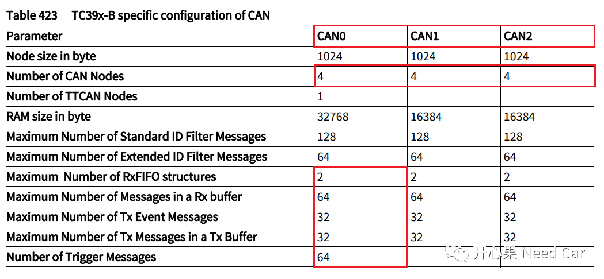
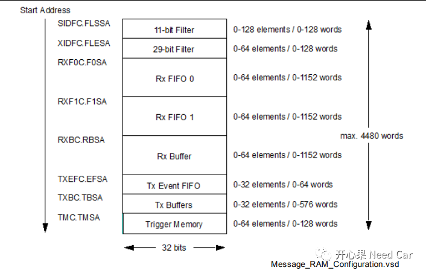
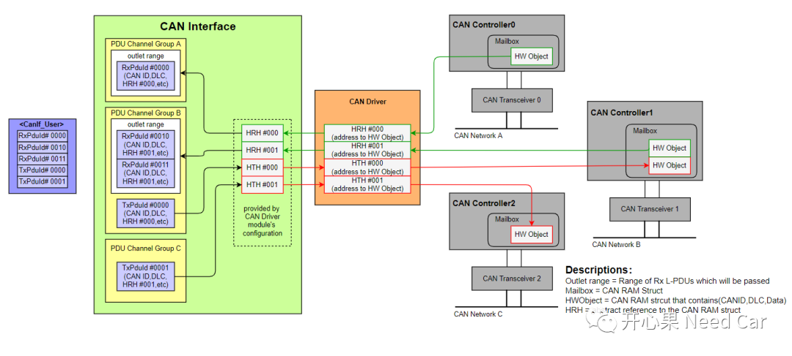
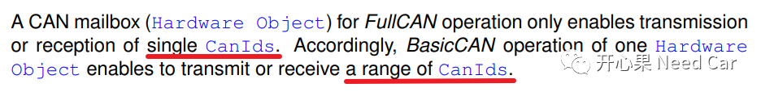
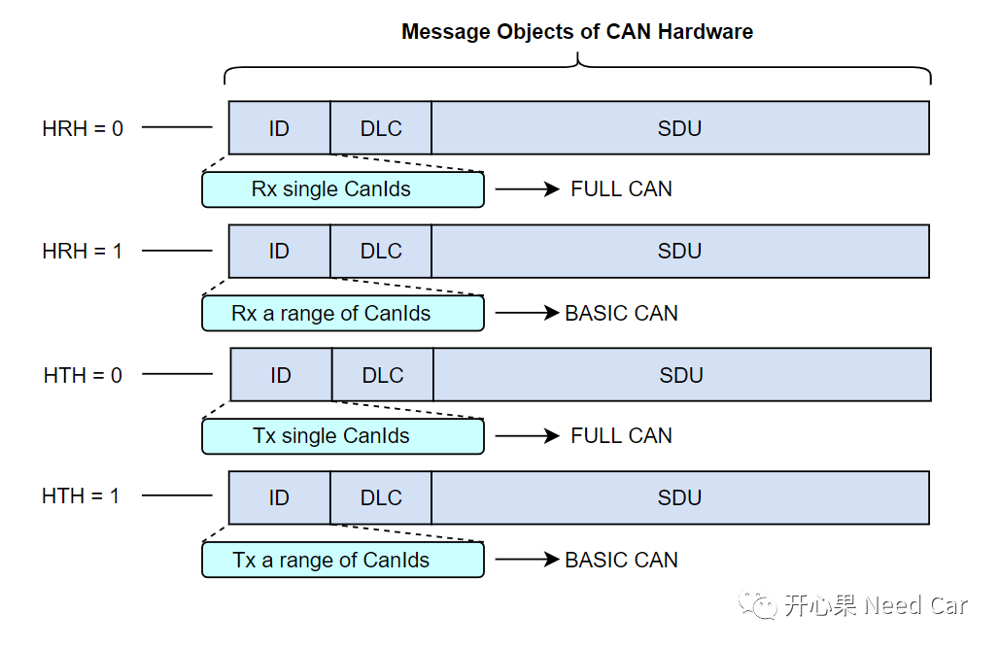
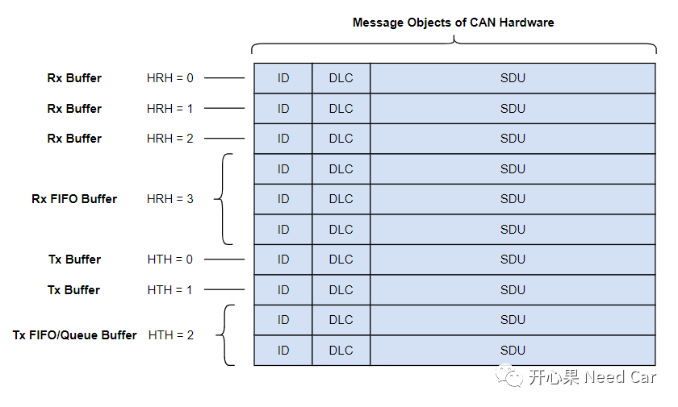
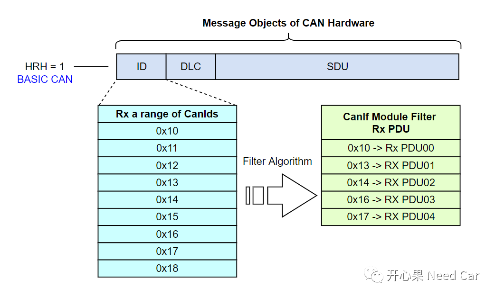
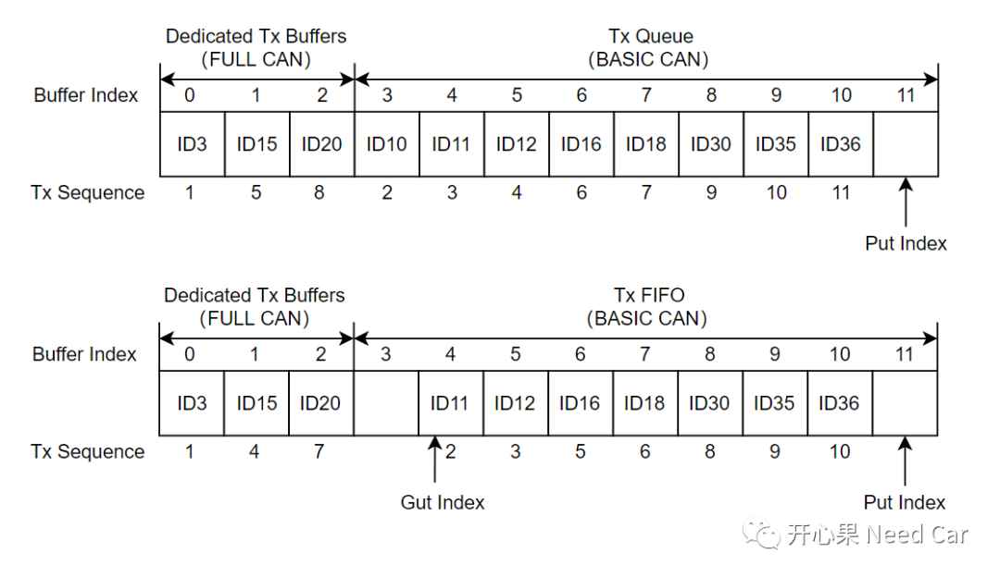

在搞清楚FullCAN和BasicCAN是什么之前，我们先搞清楚一些基础的东西。
1、CAN Module与CAN Node、Controller关系

2、Controller与Transceiver关系

3、Controller与RAM资源关系
刚提到，tc397中，一个CAN Module包含4个Controller，那每个Controller可以发送多少个CAN报文，接收多少个CAN 报文呢？这里我们要区分硬件缓存CAN报文的数量和项目中要求发送/接收报文的数量。
硬件缓存CAN报文数量：是指上层请求发送报文或者接收报文时，CAN驱动最多能缓存的数量；
项目中要求发送/接收报文的数量：是指当前节点要外发或者接收的报文数量。
以发送CAN报文数量为例：需求要求当前网络节点发送100帧CanID不同的CAN报文，实际该节点CAN Controller可用的硬件发送缓存区最多有32，意味着底层硬件最多缓存32帧发送报文，如果超过32帧发送请求，则会因没有硬件空间缓存而发送请求失败。
tc397 CAN Module资源情况如下所示：

20 Tx Dedicated Buffer+ 12 Tx Queue 40 Rx Dedicated Buffer+ 24 Rx FIFO

4、Mailbox、HRH、HWObject
Mailbox：邮箱，就是CAN驱动所具有的接收缓存区和发送缓存区，接收缓存区和发送缓存区均在RAM区。
HWObject：硬件对象，包含CAN ID、DLC、Data等信息的RAM区。
HRH：Hardware Receive Handle，接收句柄，一个HRH表示一个接收HWObject。
HTH：Hardware Transmit Handle，发送句柄，一个HTH表示一个发送HWObject。
Mailbox、HWObject、HRH、HTH、Controller、Transceiver之间的关系如下所示：

首先，FullCAN和BasicCAN是CanIf模块配置的参数。
BasicCAN：一个HWObject(Hardware Object)可以处理一段范围的CanId
FullCAN：一个HWObject(Hardware Object)只能处理单个CanId
Autosar对FullCAN和BasicCAN的解释如下所示：

将上述的解释进一步细化，如下所示：


在CAN驱动层，可以通过过滤的方式，过滤一段范围内的CanID，也就是说：会有一段范围内的报文接收进来，但是接收进来的这一段范围的报文并不一定都是上层所需要的，怎么办呢？用软件方式，再过滤一遍，由CanIf过滤所需要的CAN报文。因此，提出了FullCAN和BasicCAN的概念。
比如：HRH对应BASIC CAN类型，接收CanID范围：0x10~0x18，CanIf根据过滤算法，在0x10~0x18范围内过滤出需要的0x10、0x13、0x14、0x16、0x17送给上层，而其余的丢弃，如下所示：

不同报文类型如何选择FULL CAN/BASIC CAN
应用报文：一般选择配置成FULL CAN类型，对于应用报文，一般不需要缓存，使用最新接收的数据即可。对于发送的应用报文，都配置成FULL CAN类型需要一个前提：上层需要发送应用报文数量＜底层硬件缓存区数量。比如：底层发送硬件缓存区数量为32，节点需要发送的应用报文数量为50，显然无法将50个发送的应用报文都配置成FULL CAN。遇到这种情况，一般会将重要的应用报文配置成FULL CAN，而其他要发送的应用报文配置成BASIC CAN。这样配置以后，硬件缓存区的分配就需要混用，即：Dedicated Tx Buffers+Tx Queue或者 Dedicated Tx Buffers+Tx FIFO，如下所示：

如上图，ID3、ID15、ID20是比较重要的应用报文，配置成FULL CAN，分别给一个独立的缓存区；其他的缓存区则配置成BASIC CAN，即：一个缓存区可以发送多个不同CanID的报文。
诊断报文：一般选择配置成BASIC CAN类型（结合FIFO Buffer使用），因为诊断报文的请求/响应不能错序，需按照顺序处理，且数据不能覆盖；
网络管理报文：接收一般选择配置成BASIC CAN类型，因为一个节点一般会要求接收一段范围的网络管理报文，eg:0x500~0x53F。发送网络管理报文配置成FULL/BASIC CAN类型均可，如果资源够用，推荐配置成FULL CAN类型，因为每个节点的发送网络管理报文唯一；
标定报文：一般选择配置成FULL CAN类型。

参考资料
SIMPLE TITLE
Infineon-AURIX_TC3xx_Part2-UserManual-v01_00-EN.pdf
往期精彩回顾